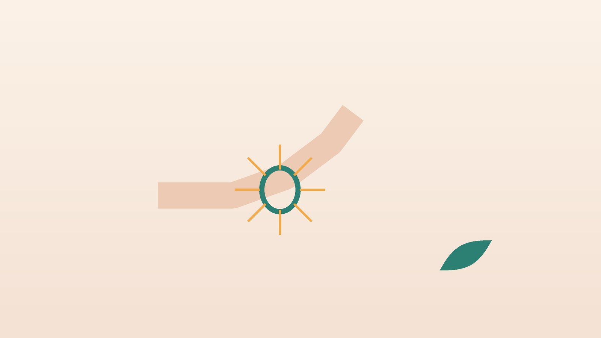

건강 칼럼 · 인천 방아쇠수지 한의원
손가락이 걸렸다가 딸깍 펴진다면, 방아쇠수지 한방 치료

나의 손가락 증상, 이런 모습인가요?
- 손가락을 굽혔다 펼 때 '딸깍' 하고 걸리는 느낌이 있다
- 아침에 손가락이 굽은 채 뻣뻣하다가 시간이 지나면 풀린다
- 손바닥 쪽 손가락 뿌리에 작은 멍울이 만져지고 누르면 아프다
- 주먹을 꽉 쥐었다 펴기가 어렵다
- 가위질, 걸레 짜기, 운전대 잡기를 오래 한 뒤 심해진다
- 당뇨나 류마티스관절염을 앓고 있다
이 체크리스트는 진단 도구가 아니라 상담이 필요한지 가늠해 보는 참고용입니다.
방아쇠수지는 왜 생기나요?
손가락을 굽히는 힘줄은 손가락 뿌리에서 터널처럼 생긴 단단한 띠(활차) 안을 미끄러지듯 지나갑니다. 손을 꽉 쥐는 동작이 반복되면 힘줄과 터널 벽이 함께 두꺼워지고, 두꺼워진 힘줄이 좁은 입구를 지날 때마다 걸렸다가 튕겨 나가는데, 이 모습이 총의 방아쇠를 당기는 것과 비슷해 붙은 이름입니다. 심해지면 손가락이 굽힌 채로 잠겨 다른 손으로 펴 주어야 하거나 아예 펴지지 않습니다.
당뇨가 있으면 힘줄 조직이 두꺼워지기 쉬워 방아쇠수지가 잘 생기고, 여러 손가락에 함께 오거나 치료 반응이 늦은 경우가 많습니다. 류마티스관절염에서는 힘줄을 싸는 막의 염증이 원인이 되기도 합니다. 정형외과에서는 보통 휴식과 손가락 보조기, 힘줄 통로 안의 스테로이드 주사로 시작하며, 주사 뒤에도 반복되거나 잠긴 채 풀리지 않으면 A1 활차를 잘라 넓혀 주는 수술을 고려합니다. 당뇨가 있는 분은 스테로이드 주사 뒤 며칠간 혈당이 오를 수 있어 혈당을 살펴야 합니다.
정형외과 진료가 먼저 필요한 신호
- 손가락이 굽힌 채 잠겨 다른 손으로도 펴지지 않는다
- 손가락이 붓고 붉으며 열감이 있고, 굽히기만 해도 몹시 아프다
- 손가락 마디가 여러 군데 붓고 아침 뻣뻣함이 1시간 넘게 이어진다
- 손가락 저림이나 감각 저하가 함께 있다
- 다친 뒤 손가락을 굽히거나 펴는 힘이 갑자기 없어졌다
붓고 뜨거운 손가락은 힘줄 막의 감염일 수 있어 서둘러 진료를 받아야 합니다. 여러 관절이 함께 붓는다면 류마티스관절염을 확인하고, 잠긴 손가락은 억지로 꺾어 펴지 마세요.
한의학은 방아쇠수지를 어떻게 보나요?
한의학에서는 힘줄이 굳고 오그라들어 잘 펴지지 않는 것을 근비(筋痺) 또는 힘줄이 당기는 근급(筋急)으로 보았습니다. '간은 힘줄을 주관한다(肝主筋)'고 하여, 힘줄이 제대로 움직이려면 간에 저장된 혈이 충분히 적셔 주어야 한다고 생각했습니다.
손을 쉬지 않고 쓰면 손가락 뿌리의 한 지점에 기혈이 몰려 막히고, 여기에 습과 담이 엉기면 멍울처럼 두꺼워진다고 해석했습니다. 반대로 나이가 들거나 출산 뒤 혈이 부족해지면 힘줄이 메말라 뻣뻣해진다고 보았습니다. 그래서 막힌 국소를 푸는 치료와 힘줄을 적시는 치료를 함께 생각합니다.
나의 방아쇠수지는 어떤 유형일까?
1. 기체혈어(氣滯血瘀) 많이 써서 뭉친 유형
- 이런 분에게 많아요
- 미용, 요리, 원예처럼 손을 꽉 쥐는 일을 하는 분
- 나타나는 모습
- 손가락 뿌리를 누르면 찌르듯 아프고 일한 뒤 걸림이 심하다
- 함께 오는 몸의 신호
- 손바닥 뭉침, 손등 붓기 없음
- 진찰에서 보이는 모습
- 멍울이 단단하고 혀에 어두운 점
- 치료 방향
- 막힌 기혈을 풀어 뭉친 부위를 부드럽게 하는 방향 (활혈 위주의 처방)
- 오늘부터 해 볼 것
- 가위나 집게는 손잡이가 넓고 스프링이 달린 도구로 바꿔 보세요.
2. 담습(痰濕) 붓고 둔한 유형
- 이런 분에게 많아요
- 당뇨가 있거나 몸이 잘 붓는 분
- 나타나는 모습
- 여러 손가락이 아침마다 붓고 뻑뻑하며 걸린다
- 함께 오는 몸의 신호
- 몸이 무거움, 식후 졸림
- 진찰에서 보이는 모습
- 설태가 두껍고 미끄러움, 손가락이 통통하게 부음
- 치료 방향
- 습과 담을 걷어 힘줄 주변 부기를 줄이는 방향 (이진탕 가감)
- 오늘부터 해 볼 것
- 혈당 기록을 함께 가져오시면 경과를 보기 좋습니다.
3. 간혈허(肝血虛) 메말라 뻣뻣한 유형
- 이런 분에게 많아요
- 출산 뒤, 폐경 전후의 여성
- 나타나는 모습
- 통증보다 뻣뻣함이 크고 아침에 특히 펴기 힘들다
- 함께 오는 몸의 신호
- 손발 저림, 눈 피로, 쥐가 잘 남
- 진찰에서 보이는 모습
- 혀가 담백하고 맥이 가늘다
- 치료 방향
- 혈을 채워 힘줄을 적시는 방향 (작약감초탕·사물탕 계열)
- 오늘부터 해 볼 것
- 아침에 미지근한 물에 손을 담근 뒤 천천히 펴 보세요.
4. 풍습열(風濕熱) 열감이 있는 유형
- 이런 분에게 많아요
- 류마티스관절염 등 염증성 관절 질환이 있는 분
- 나타나는 모습
- 손가락 마디가 붓고 따끈하며 여러 곳이 함께 아프다
- 함께 오는 몸의 신호
- 아침 뻣뻣함이 길고 피로가 심함
- 진찰에서 보이는 모습
- 혀가 붉고 설태가 누르스름함
- 치료 방향
- 열과 습을 식혀 염증 반응을 가라앉히는 방향 (기존 류마티스 치료와 병행)
- 오늘부터 해 볼 것
- 류마티스 약은 임의로 줄이지 말고 담당 의사와 상의하세요.
한의원에서는 어떻게 진찰하나요?
- 걸림 단계: 걸림 없이 아프기만 한지, 스스로 펴지는지, 다른 손으로 펴야 하는지 확인합니다.
- 멍울 위치: 손바닥 쪽 손가락 뿌리에서 두꺼워진 부위와 누르는 통증을 찾습니다.
- 전신 질환: 당뇨, 갑상선 질환, 류마티스관절염 여부와 복용 약, 최근 주사 치료를 여쭙니다.
- 설진·맥진: 막힘, 습담, 혈 부족, 열의 비중을 판단합니다.
침·약침·한약 치료는 어떻게 하나요?
1. 침 치료
손바닥 쪽 손가락 뿌리의 두꺼워진 자리 주변 아시혈(阿是穴)을 중심으로, 엄지라면 엄지두덩 가운데의 어제(魚際), 손바닥 한가운데의 노궁(勞宮), 손등 손가락 사이 갈래에 있는 팔사(八邪), 손목 안쪽 주름 가운데의 대릉(大陵)을 함께 씁니다. 손바닥은 감각이 예민해 가는 침으로 얕게 자극합니다.
방아쇠수지에 대한 침 치료 연구는 아직 많지 않고 규모도 작아, 걸림 횟수와 아침 뻣뻣함을 기록하며 효과를 확인합니다.
2. 약침
두꺼워진 활차 주변과 손바닥 근육에 소량의 약침을 적용해 부기와 통증을 줄입니다. 당뇨가 있는 분은 감염에 더 주의해야 하므로 시술 부위를 청결하게 관리하고, 혈액을 묽게 하는 약을 드시면 알려 주세요.
3. 한약
여러 손가락에 반복되거나 당뇨·류마티스관절염이 바탕에 있는 경우 몸 상태에 맞는 처방을 고려하며, 기존에 드시는 약과의 관계를 확인합니다.
원장님이 네이버 블로그에 진료 이야기와 건강 정보를 꾸준히 올리고 있습니다. 더 많은 이야기는 블로그에서 확인해 보세요.
블로그 보기치료는 어떤 순서로 진행되나요?
- 단계 확인 잠긴 손가락이나 감염 신호가 있으면 정형외과로 먼저 안내합니다.
- 1~3주 손을 쥐는 일을 줄이고 주 2회 안팎의 침 치료와 약침으로 통증과 부기를 낮춥니다.
- 3~8주 걸림 횟수가 줄면 힘줄 미끄러짐 운동을 더하고 손 사용 습관을 바꿉니다.
- 판단 걸림이 계속되거나 심해지면 주사 치료나 수술을 정형외과와 상의합니다.
걸림이 심해 손가락이 잠기는 단계라면 한방 치료만 고집하지 말고 주사나 수술을 함께 검토하는 것이 좋습니다.
손가락 힘줄을 아끼는 생활 관리
- 쥐는 힘 줄이기: 걸레는 짜지 말고 밀대를, 무거운 장바구니는 손가락 대신 팔꿈치나 어깨에 겁니다.
- 아침 풀기: 미지근한 물에 손을 담근 뒤 손가락을 천천히 굽혔다 폅니다.
- 밤 보조기: 밤에 손가락을 곧게 펴 두는 보조기가 아침 걸림을 줄이는 데 도움이 될 수 있습니다.
- 억지로 꺾지 않기: 걸린 손가락을 반복해서 '딸깍' 튕기면 힘줄이 더 붓습니다.
- 혈당 관리: 당뇨가 있다면 혈당 조절이 힘줄 건강에도 영향을 줍니다.
다른 진료가 함께 필요한 경우
- 손가락이 잠겨 펴지지 않으면 정형외과에서 주사나 수술을 상의하세요.
- 손가락이 붓고 뜨거우며 열이 난다면 감염을 확인해야 합니다.
- 여러 관절이 함께 붓고 아침 뻣뻣함이 길다면 류마티스내과 진료를 받으세요.
- 당뇨가 있다면 내과에서 혈당 관리를 함께 점검하세요.
자주 묻는 질문 Q&A
- Q1. 저절로 낫기도 하나요?
- 가벼운 경우 손 사용을 줄이면 좋아지기도 하지만, 걸림이 잦아지면 치료를 받는 편이 낫습니다.
- Q2. 스테로이드 주사를 맞았는데 침도 맞아도 되나요?
- 가능합니다. 주사 날짜와 손가락을 알려 주시면 같은 부위는 간격을 두고 진행합니다.
- Q3. 수술은 언제 하나요?
- 주사와 보존 치료 뒤에도 반복되거나 손가락이 잠긴 채 풀리지 않으면 정형외과와 상의합니다.
- Q4. 당뇨가 있으면 잘 안 낫나요?
- 당뇨가 있으면 여러 손가락에 생기고 회복이 더딘 경우가 많아 혈당 관리와 함께 치료합니다.
- Q5. 손바닥에 침을 맞으면 아프지 않나요?
- 가는 침으로 얕게 놓아 부담을 줄이고, 불편하면 손등 쪽 혈자리 위주로 바꿉니다.
- Q6. 치료 기간은 얼마나 걸리나요?
- 보통 3~8주 동안 걸림 횟수와 아침 뻣뻣함을 보며 진행합니다.
- Q7. 걸린 손가락을 자꾸 튕겨도 되나요?
- 반복해서 튕기면 힘줄이 더 부을 수 있으니 미지근한 물에 풀고 천천히 펴세요.
- Q8. 수술한 뒤에도 뻣뻣해요.
- 수술 뒤 남은 붓기와 뻣뻣함도 관리할 수 있습니다. 수술 날짜와 담당 의사 안내를 알려 주세요.
진료 안내
- 진료시간
- 평일 09:00~20:00 (점심시간 13:00~14:00)
토·일·공휴일 09:00~15:00 - 주소
- 인천광역시 서구 가경주로 46, 2층 (가정동)
인천2호선 가정중앙시장역 인근 - 주차
- 한의원 건물 바로 앞 1층 도원주차장
진료시간은 사정에 따라 바뀔 수 있으니 방문 전 전화로 확인해 주세요.
참고 자료
- American Academy of Orthopaedic Surgeons (OrthoInfo). Trigger Finger
- 질병관리청 국가건강정보포털 — 원문
※ 이 글은 일반적인 건강 정보이며, 개인의 상태에 따라 치료 방법과 결과는 다를 수 있습니다. 정확한 진단과 치료는 진료를 통해 결정됩니다. 침·약침 시술 후 드물게 멍, 통증 등이 생길 수 있습니다.